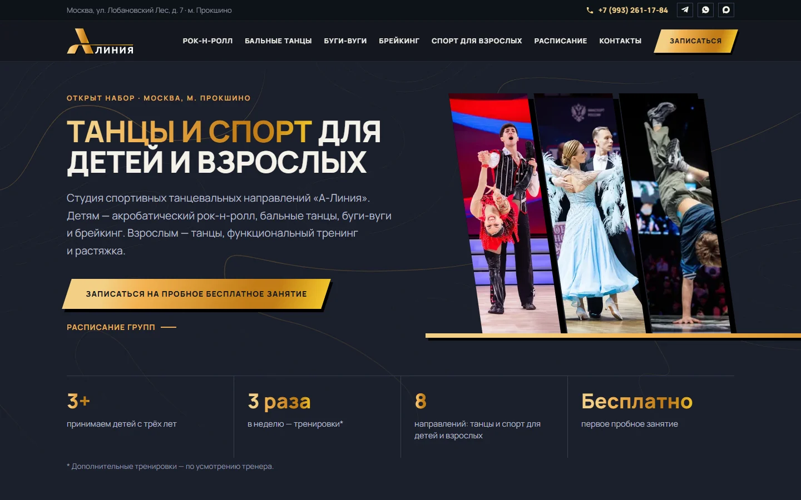

Сайты под ключСтудия танцев «А-Линия», Москва
Сайт студии танцев с ботом для заявок
8направлений для детей и взрослых: расписание, тренеры, запись
Многостраничный сайт с расписанием и тренерами. Заявки с формы и из бота приходят администратору в Telegram и ведутся по статусам.
Как сделано
Студии нужен был сайт, который объясняет родителям и взрослым, чем занимаются в зале, и доводит до записи на бесплатное пробное занятие.
- Страницы направлений с расписанием и тренерами; всё наполнение лежит в одном файле
- Форма записи: заявка сразу уходит администратору в Telegram
- Бот рассказывает о направлениях, проводит анкету и пересылает вопросы администраторам
- В боте — список заявок по статусам: ждёт ответа, в работе, записан, отказ
- Карта и счётчик загружаются только после согласия на cookie
- Выкладка на хостинг заказчика, бот работает в отдельном облаке; сквозные автотесты
Node.jsHTML · CSS · JSTelegram Bot APIЯндекс Карты
a-liniya.ru